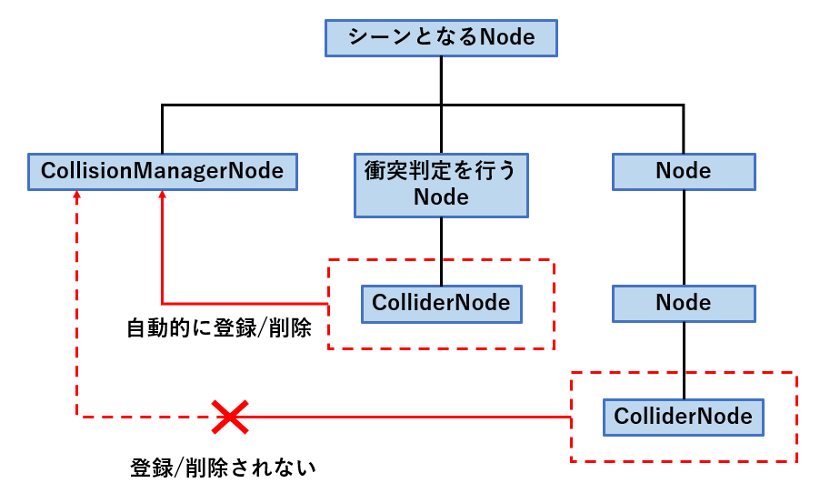
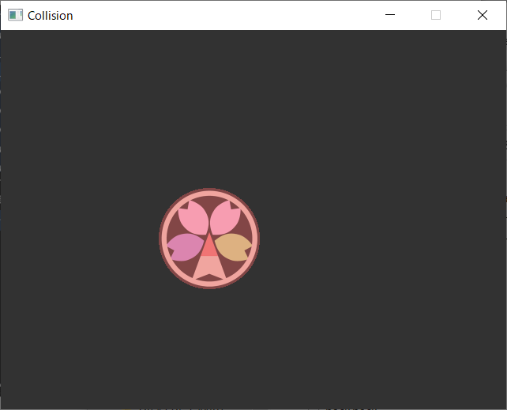

衝突判定
Altseed2では物理演算を用いて，2Dの衝突判定を行う機構が備わっています。
Colliderクラス
Colliderクラスは自身のメンバの情報をもとに他Colliderのインスタンスとの衝突の有無を判定します。
Colliderと衝突判定の種類は以下の通りです。
| Collider | 衝突判定のタイプ | 使用するメンバ |
|---|---|---|
| CircleCollider | 円形 | 中心，半径 |
| PolygonCollider | 多角形 | 各頂点の座標 |
| RectangleCollider | 短形 | 左上の座標，サイズ(縦・横) |
Colliderとの衝突判定はGetIsCollidedWith(Collider)メソッドを使用します。
指定したコライダと衝突していたらtrue，衝突していなかったらfalseを返します。
ColliderNodeクラスとCollisionManagerNodeクラス
この2つのクラスによって，コライダの衝突判定を自動で行う事が出来ます。
ColliderNodeクラス
このクラスはColliderクラスを内部に持っています。
また，この派生クラスにCircleColliderNode，PolygonColliderNode，
RectangleColliderNodeクラスがあり，それぞれCircleCollider，
PolygonCollider，
RectangleColliderクラスのインスタンスを内部に持っています。
これらのクラスのプロパティを通して，内部コライダのメンバの操作を行う事が出来ます。
Important
このクラスは，衝突判定を行いたいノード(シューティングゲームで言う自機や弾となるノード)の子ノードとして使用される必要があります。
CollisionManagerNodeクラス
このクラスではColliderNodeクラスのインスタンスが自動的に登録され，GetIsCollidedWith(Collider)メソッドを自動的に実行します。
Tip
GetIsCollidedWith(Collider)メソッドによる衝突判定は，同じColliderNodeの組み合わせに対して1フレームにつき1度しか行われません。
Important
このクラスは衝突判定を行いたいノードの親ノードの子として使用される必要があります。
また，1つのノードに対して，CollisionManagerNodeクラスのインスタンスは1つしか子として持つ事が出来ません。(登録しようとした場合は例外がスローされます。)
実装の形式
ColliderNodeクラスとCollisionManagerNodeクラスはそれぞれ以下の図のような関係でなければなりません。
Caution
ColliderNodeの自動登録には，シーンとなるノードに対して，CollisionManagerNodeが子ノードであり，かつColliderNodeが孫ノードである事が重要です。
それ以外の場合におけるColliderNodeの自動的な追加/削除は発生しません。

Note
衝突判定を行うノードがICollisionEventReceiverインターフェイスを実装している場合，
- 衝突の開始
- 衝突の継続
- 衝突の終了
においてそれぞれ対応したメソッドが呼び出されます。
以上の点を踏まえた実装は以下のサンプルコードの通りです。
using Altseed2;
using System;
namespace Sample
{
class Collision
{
static void Main(string[] args)
{
// Altseed2 を初期化します。
Engine.Initialize("Collision", 640, 480);
// 衝突判定が行われるノードの親ノードを作成します。
var scene = new Node();
// コライダを自動処理するノードをシーンに登録します。
scene.AddChildNode(new CollisionManagerNode());
// 衝突判定を持つスプライトノードを生成します。
var node1 = new CollidableSprite()
{
Position = new Vector2F(0, 100)
};
// 衝突時のイベントを実行する衝突判定を持つスプライトノードを生成します。
var node2 = new EventRaisedCollidableSprite()
{
Position = new Vector2F(300, 100)
};
// エンジンにノードを追加します。
scene.AddChildNode(node1);
scene.AddChildNode(node2);
Engine.AddNode(scene);
// メインループ。
// Altseed のウインドウが閉じられると終了します。
while (Engine.DoEvents())
{
// 右側に移動させる
node1.Position += new Vector2F(5, 0);
// Altseed を更新します。
Engine.Update();
}
// Altseed の終了処理をします。
Engine.Terminate();
}
}
// 衝突判定が行われるノードのクラス
class CollidableSprite : SpriteNode
{
// 円形コライダを持つノード
private readonly CircleColliderNode colliderNode = new CircleColliderNode();
// コンストラクタ
public CollidableSprite()
{
// テクスチャを読み込みます。
Texture = Texture2D.Load(@"TestData/IO/AltseedPink256.png");
// 半径を設定します。
colliderNode.Radius = Texture.Size.X / 2;
// 中心を設定します。
CenterPosition = Texture.Size / 2;
// コライダを登録します。
AddChildNode(colliderNode);
}
}
// 衝突時の内容を実装できるクラス
class EventRaisedCollidableSprite : CollidableSprite, ICollisionEventReceiver
{
// 衝突が開始された時に実行されます。
void ICollisionEventReceiver.OnCollisionEnter(CollisionInfo info)
{
Color = new Color(255, 50, 50);
}
// 衝突が継続している時に実行されます。
void ICollisionEventReceiver.OnCollisionStay(CollisionInfo info)
{
Angle++;
}
// 衝突が解除された時に実行されます。
void ICollisionEventReceiver.OnCollisionExit(CollisionInfo info)
{
Color = new Color(255, 255, 255);
}
}
}
結果
衝突を開始したときに色が赤くなり，以降衝突している間回転します。
衝突終了時には色が戻ります。
衝突範囲の描画
ColliderVisualizeNodeFactory.Create(ColliderNode)を使用することで，衝突領域を描画できるノードを取得できます。
Important
得られたノードを，Node.AddChildNode(Node)で登録しなければ衝突判定の視覚化は行われません。
生成元のColliderNodeをCollisionManagerNodeの子にすることで，描画範囲を衝突範囲に同期することが出来ます。
Caution
衝突範囲の描画の同期は，元となるColliderNodeがCollisionManagerNodeの管理下にある必要があります。
使い方は以下のサンプルコードを参考にしてください。
using Altseed2;
namespace Sample
{
class ColliderVisualization
{
static void Main(string[] args)
{
// Altseed2 を初期化します。
Engine.Initialize("Collision", 640, 480);
// 衝突判定が行われるノードの親ノードを作成します。
var scene = new Node();
// コライダを自動処理するノードをシーンに登録します。
scene.AddChildNode(new CollisionManagerNode());
// 衝突判定を持つSpriteNodeを生成します。
var texture = Texture2D.Load(@"TestData/IO/AltseedPink256.png");
var sprite = new SpriteNode()
{
Position = new Vector2F(200f, 200f),
Scale = new Vector2F(0.5f, 0.5f),
Texture = texture,
CenterPosition = texture.Size / 2,
};
// 円形コライダノードを生成します。
var collider = new CircleColliderNode()
{
Radius = texture.Size.X / 2,
};
// colliderの衝突判定を視覚化できるノードを生成します。
var visualizer = ColliderVisualizeNodeFactory.Create(collider);
// エンジンにノードを追加します。
scene.AddChildNode(sprite);
sprite.AddChildNode(collider);
collider.AddChildNode(visualizer);
Engine.AddNode(scene);
// メインループ。
// Altseed のウインドウが閉じられると終了します。
while (Engine.DoEvents())
{
// Altseed を更新します。
Engine.Update();
}
// Altseed の終了処理をします。
Engine.Terminate();
}
}
}
このコードを実行すると以下のように円形の当たり判定が赤色で示されます。
